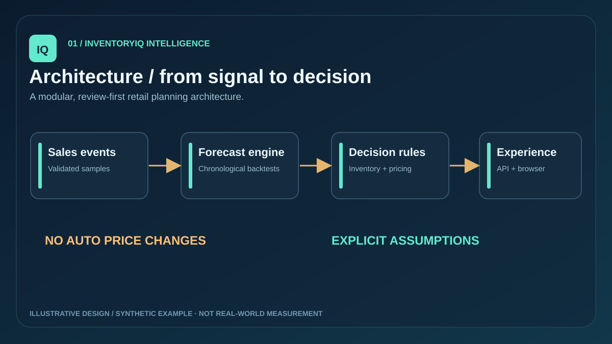
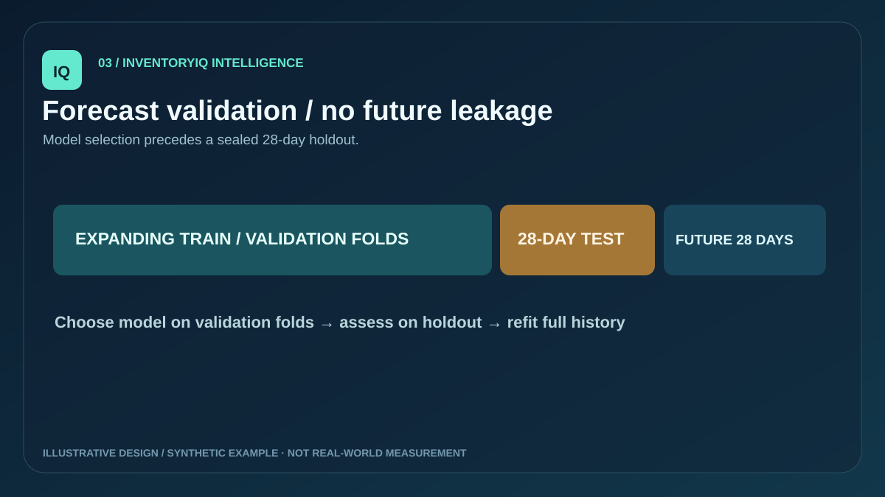
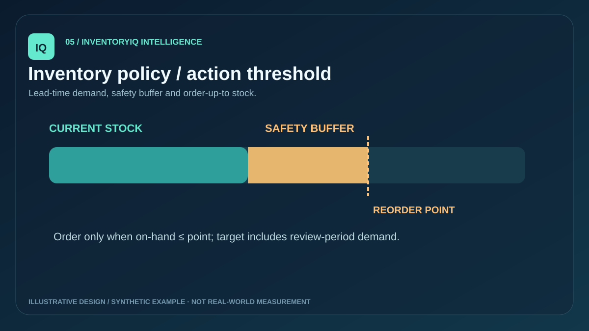

ILLUSTRATIVE REVENUE / 28 DAYS
—Current reference price
One decision workspace for demand patterns, stock coverage and bounded pricing what-ifs. All figures on this page are deterministic, illustrative synthetic demo data.
Visual concept · not a model output
01 / LIVE DEMO CONTROLS
Change product, stock or elasticity to explore scenario calculations.
02 / DEMAND TRAJECTORY
The browser uses a simplified illustrative forecast. For actual model-selection backtests and holdout WAPE, run the Python pipeline and inspect its report.
03 / REORDER LOGIC
Service factor 1.645 (95% target); simplified volatility proxy.
04 / CONSTRAINED SCENARIOS
Assumed demand elasticity −1.4
Price candidates ±10%, minimum gross margin 20%. Assumption-based scenarios are NOT learned optimal prices.
05 / WHAT-IF MATRIX
| Change | Candidate price | Simulated units | Simulated gross profit | Margin |
|---|
No prices are sent to a store. The elasticity assumption may be wrong; experiment design and domain approval are required before operational use.
06 / SYSTEM DESIGN
Explore the source-backed architecture, validation and documented assumptions.


